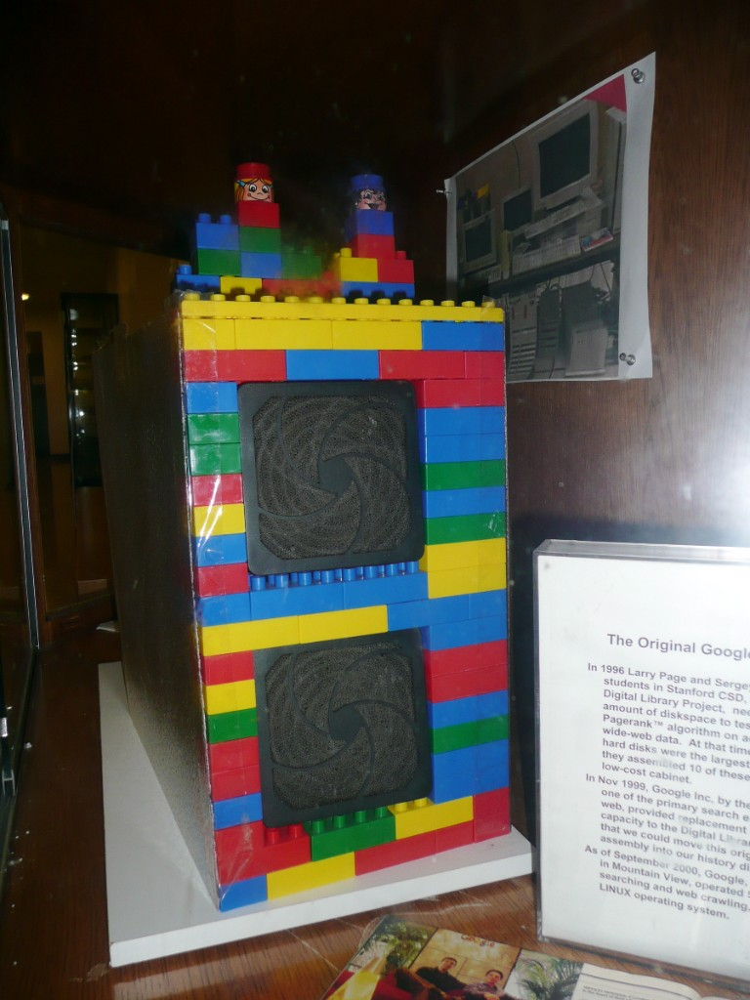

Zahlen in Fest- und Gleitkomma schreiben, die Form wechseln und damit sicher rechnen.
3. Semester · Thema 06
Unterkapitel
· 3. Semester
· Gesamt
← 05 Potenzen
· 07 Terme →
Ein Googol ist die Zahl \(10^{100}\) — eine 1 mit 100 Nullen. Der Name inspirierte die Gründer von Google: Suchen sollte „unendlich viel“ Information finden können.
1996 bastelten Larry Page und Sergey Brin an der Stanford University aus günstigen Festplattengehäusen Server — die Fronten aus LEGO. So testeten sie den PageRank-Algorithmus, bevor Google Inc. 1999 Ersatz lieferte.

In der Gleitkommaform gilt üblicherweise \(1\le a<10\) und \(k\in\mathbb{Z}\).
1) Ein Googol ist …
2) Warum ist Gleitkomma praktisch?
\(a\cdot 10^{k}\): Das Komma in \(a\) wird um \(|k|\) Stellen
rechts (\(k>0\)) bzw. links (\(k<0\)) verschoben.
Lichtgeschwindigkeit ≈
Vorsilben sind Kurzformen für Zehnerpotenzen — in Technik, Physik und Informatik unverzichtbar.
| Potenz | Wert | Vorsilbe | Abk. |
|---|---|---|---|
| \(10^{12}\) | Billion | Tera | T |
| \(10^{9}\) | Milliarde | Giga | G |
| \(10^{6}\) | Million | Mega | M |
| \(10^{3}\) | Tausend | Kilo | k |
| \(10^{0}\) | Eins | — | — |
| \(10^{-3}\) | Tausendstel | Milli | m |
| \(10^{-6}\) | Millionstel | Mikro | μ |
| \(10^{-9}\) | Milliardstel | Nano | n |
| \(10^{-12}\) | Billionstel | Piko | p |
Hinweis: Station zählt als erledigt, wenn die Vorsilben-Zuordnung stimmt.
Komma verschieben, Nullen ergänzen. Negativer Exponent → Zahl < 1.
Komma so setzen, dass \(1\le a<10\). Stellen zählen = Exponent \(k\).
Beide Übungen A und B müssen stimmen, damit die Station als erledigt gilt.
Danach ggf. normalisieren, sodass wieder \(1\le a<10\).
Ordne die Größen nach ihrem Zahlenwert (aufsteigend).
Pro \(\mu\mathrm{l}\): 5 Mio. Erythrozyten, 7000 Leukozyten, 300 000 Thrombozyten. Gesamte Zellzahl in \(5\,\mathrm{l}\) Blut?
\(1\,\mathrm{l}=10^{6}\,\mu\mathrm{l}\). Summe der Zellen pro µl zuerst bilden.
Station erledigt, wenn Sortieren, Einheiten und MC stimmen.
Lies genau, wandle Einheiten um, rechne in Gleitkomma. Tipps schrittweise öffnen.
\(1\,\mathrm{cm}^{3}\) Blut enthält ca. \(5\cdot10^{9}\) Erythrozyten. Durchmesser eines Erythrozyten: \(7{,}5\,\mu\mathrm{m}\).
\(53\,543\,000\,\mathrm{t}\) Abfall; Bevölkerung ca. \(8{,}375\) Mio.
Aktuelles Volumen \(V=18\,400\,\mathrm{km}^{3}\) (= 75 % des Volumens von 1996). 1996 entsprach der See 20 % der weltweiten Süßwasserreserven \(V_g\).
2) Behauptung: Mit \(V=18\,400\,\mathrm{km}^{3}\) kann man 7 Mrd. Menschen 50 Jahre lang mit 150 L/Tag versorgen.
9 Jahre lang mittlere Geschwindigkeit \(16{,}2\,\mathrm{km/s}\). Vereinfachung: 1 Jahr = 365 Tage.
Typische Kontexte aus dem Arbeitsblatt — repräsentative Auswahl. Antworten dürfen in Gleitkomma stehen.